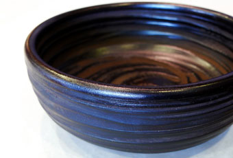
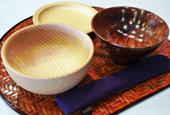
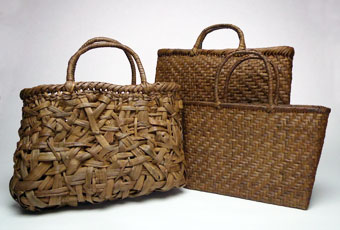
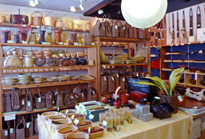

SHOP INFORMATION手仕事の店 倉敷民芸
職人の手で作られた自然素材の民芸品店

倉敷駅から徒歩10分のところにある「倉敷民芸」は、全国の職人が手仕事で作り上げた工芸品を扱うお店です。飯椀や汁椀、サラダ鉢などの食器から、スプーン、フォークなどのカトラリー、手提げ籠など、普段の生活に必要なものが店内に多数並んでいます。どれも、体に優しい木や竹などの自然素材で作られたものばかり。使えば使うほど味が出るのも自然素材ならではの特長です。
木器の飯椀でごはんを食べよう

一番のおすすめ品は、モミの木や松の木、ケヤキの木などで作られた飯椀と汁椀。本来なら、茶碗は茶を飲むもの、米は飯椀で食べるものだそうです。この飯椀には「正しい食文化を復活させたい」という店主の思いが込められています。木は熱を通しにくいので、熱々のご飯や汁物を盛りつけても熱くならず、中身は冷めにくいのが特長です。他にも、サラダ鉢や菓子鉢、茶托などがあります。
手間隙かけた山葡萄の製品

100年使えると言われている山葡萄のバッグや籠などは、西日本有数の豊富な取り揃えです。財布やアクセサリーなどもあり、全部で300種類ほどの品揃え。自然そのままの素朴な味わいがあり、使えば使うほど風合いが美しさを増します。好みのデザインやサイズでオーダーすることも可能。アフターケアも行ってくれるので、安心して使うことができます。
種類豊富な品揃え

「倉敷民芸」は「倉敷本通り商店街」にあります。美観地区へは歩いて2分と観光に便利な場所なので、国内外の観光客が散策中によく訪れるそうです。店内に並ぶ商品はどれも種類が充実しています。カトラリーだけでも100種類。胡麻竹、淡竹、亀甲竹、孟宗竹などで作られた竹製品も豊富です。長年使える商品なので、一生ものの一品を見つけてみませんか。
Googleマップでみる
一覧に戻る